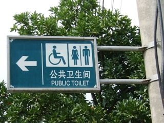

中国のトイレ事情
中国のトイレって噂に聞くと危険な感じがすると思っている方も多いのではないでしょうか、ここでは中国のトイレ事情をご紹介いたします。
ニーハオトイレは少ない
「ニーハオトイレ」という言葉を聞いたことがありますか？小便器はともかく、大便をする場所でも仕切りがなく、回りの人から丸見えというトイレのことです。広い部屋に大便器が並んでいて、用を足しながら挨拶ができるためこのような名前になりました。
地方やローカルの一部ではニーハオトイレが使われていることがありますが、都市部や外国人がよく行く観光地などではまずありません。最近では見ようと思ってもよほどディープな場所へ行かないとお目にかかることはないでしょう。
場所によっては簡易的な間仕切りトイレもある
地方の観光地などでは間仕切りがあるものの、腰程度ほどの高さしかなく、立つと丸見えというようなトイレもあります。一般的にトラベル会社で行く中国旅行ツアーなどでは、よほどのことがない限りそのようなトイレがある場所はないですが、オプショナルツアーなどで地方観光地へ行くと遭遇する可能性があります。
大手ホテル、デパート、観光施設では日本とほぼ同じ
外国人観光客も泊まるような大手ホテルや大型のデパートや百貨店、名のある観光施設のトイレは日本とほぼ同じと思ってよいでしょう。
街中のトイレ事情

トイレのマークは日本とよく似ています。
大きな街にはいたるところに公共トイレがあります。
トイレの状態ですが、日本の公共トイレや駅のトイレの「下の下」といった程度で、コンビニにようなトイレと比べるとかなり悪いです。またトイレには必ず掃除の番人や紙を売る人などが数名スタンバイしています。
まだ比較的新しいトイレですとかなりマシですが、古いトイレになると「大」の方は簡易型の仕切りのみで、ドアにかぎなどは無く、小便器も全員が一斉に用をたせる、「壁式」（壁に水がナイアガラの滝にように流れていて、そこへ向かって小便をする、個人用の小便器はない）タイプの場所も多く見られます。
「大」のほうも、若者は比較的ドアを閉めて用をたしますが、地元のおっちゃんなどは、ドアを開けたままファイトしている人も多く、中に人が入っているかどうかも、ノックではなく、ドアを開けて確認する人も多くいます。
そもそも中国では、「排泄は自然現象で、別に恥ずかしいものではない」、と考えている人（特に年配の人）も多く、あまりトイレに関してのコンプレックスを持っていません。あまり人目を気にせずトイレをしていますので、このあたりが日本人と少し考えが違います。（しかし、最近では人目を気にする人も多くなりつつあります）
注意してほしいのが、紙はまずありませんので、出かける前にティッシュペーパーを必ず用意しておいてください。トイレの管理人が紙を売っている場合もあります。
一部有料の場所もあります。お金を払う場所（バスの運賃箱のようなもの）がありますので、そこにお金を入れてからトイレに入ります。値段は様々で（2角～5角）2円から7円程度。
トイレ利用の注意点
公共トイレなど不特定多数の人が利用する洋式トイレは注意が必要です。
私も初めて見たとき、何で洋式便座に足跡があるのかと疑問に思いましたが、理由は簡単でした、一部の中国人は洋式便座を和式と同じように使用するため、洋式の便座の上にしゃがむ体勢で用をたすようです。
洋式の便座に座る際は、まず便座を拭くことをお勧めします。もちろんそんな体勢で用を足せば、照準が便器の穴に合わず、奥のほうに「アレ」がついている場合もありますので、座る前によく確認しましょう。
和式でも普通は頭は奥にしてしゃがみますが、前後を反対にしてしゃがむ人、簡単に言うと、ドアを開けると顔が前にある状態、そんな人もいますので、和式も必ず周囲を確認しましょう。
これも同様変な体勢で用を足しているので「アレ」が転がっている場合がありますので・・・・
また、一部の人でノックせずにいきなりドアを開ける人もいます。ご注意を
中国旅行注意に戻す